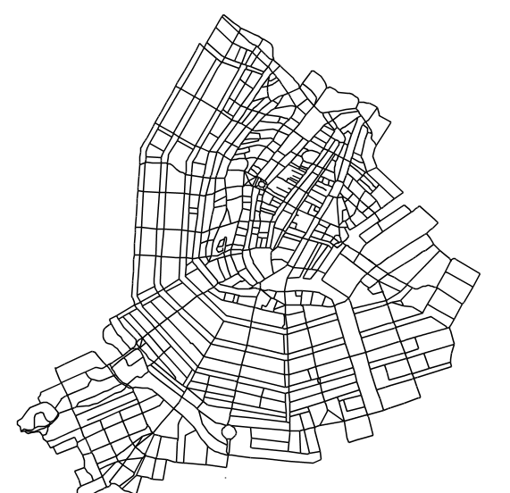
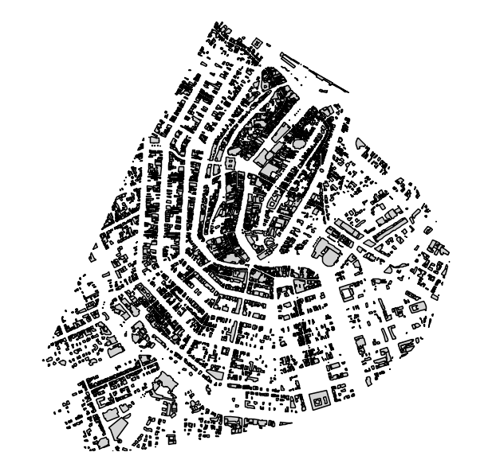

Chapter 8 Species
The model has 4 species [inhabitants, buildings, roads, public transport system]
8.1 road
This species is imported from a shapefile. The attributes of this shapefile are imported and mapped into various model variables - as attributes of the road species.

“Road Network”
8.2 buildings
This species is imported froma shapefile. The attributes of this shapefile are imported and mapped into various model variables - as attributes of the building species. The main classification of buildings is based on its usage. Curerntly the model only distinguishes between [office, home].

“Buildings”